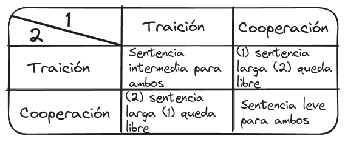
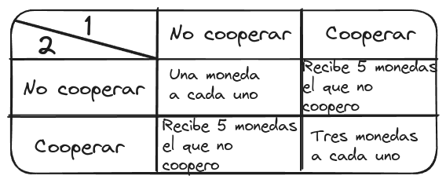
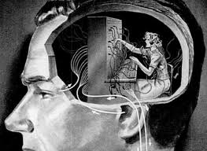
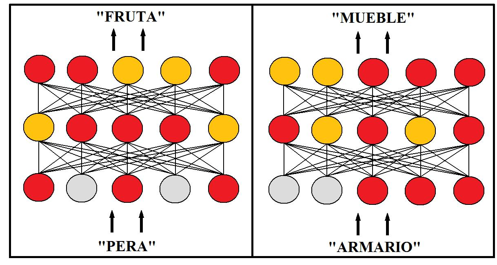

Soy Steve Andy Ildefonso Santos, soy estudiante de Ciencias de la Computación en
UTEC(Universidad de Ingenieria y Tecnologia)
, en este blog estaré publicando parte de los conocimientos aquiridos en clase y
temas de mi interés desde Matemáticas,
pasando por CS, hasta Arte. Disfruten de la lectura, estan abiertos a opiniones
enviandome un correo colectrónico o un mensaje por Instagram :D.
Publicaciones recientes
Teorema de la Complejidad Gatuna: Cómo los Gatos ya Dominaron la Ciencia de
la Computación (y no nos dimos cuenta)
Publicado el
A lo largo de la historia los gatos han demostrado ser criaturas altamente
eficientes, estratégicas y... caóticas. Su
comportamiento tiene muchas similitudes con los algoritmos y estructuras
de datos que usamos en informática. En este texto altamente científico
(al menos eso quiero creer), exploraremos cómo los gatos
aplican princípios de optimización, interrupciones y
manipulación del entorno, con un enfoque en
notación Big O, heurísticas y estructuras de
datos.
(Nota: Ningún gato fue forzado a programar durante la redacción.
Que lo hicieran voluntariamente al caminar encima del teclado es otra
historia.)
Principio de la Minimización del Costo Energético (Lazy Computing & Greedy
Algorithms)
Si hay algo en lo que los gatos son expertos, es en hacer lo mínimo
indispensable para sobrevivir. Son los verdaderos creadores
de la ley del menor esfuerzo.
Ejemplo en gatos:
Si pueden llegar a la cama con un salto en vez de
dos, siempre elegirán la ruta más corta.
Si pueden conseguir comida maullando en vez de cazar, ¿para qué
gastar calorías?
Ejemplo en Ciencias de la Computación:
Algoritmos greedy (glotones) eligen siempre la
mejor opción local para optimizar globalmente (Dijkstra,
Huffman Coding).
Lazy Evaluation en lenguajes como Haskell o Python
solo computa valores cuando es necesario.
Notación Big O aplicada a gatos:
Estrategia de movimiento 🐱
Complejidad 📈
Dormir todo el día 😴
O(1) (constante, siempre eficiente)
Saltar directamente al objetivo. 🏃
O(1) (atajo óptimo)
Explorar toda la casa en busca de comida. 🍗
O(n) (búsqueda lineal)
Probar todas las combinaciones posibles. 🔄
O(n²) o peor (brute force)
Conclusión: ¡Los gatos han resuelto el problema de la
optimización computacional! Solo calculan lo estrictamente necesario...
y luego duermen 18 horas al día. 😴💻
Principio de Exploración Heurística(A* y Simulated Annealing)
Cuando un gato entra a un nuevo lugar, no sigue un patrón
ordenado, sino que prueba diferentes caminos hasta
encontrar el óptimo. También conocido como "perder el tiempo hasta que
encuentres el mejor sitio para dormir."
Ejemplo en gatos:
Si encuentran una caja nueva, primero meten una pata.
Luego meten la cabeza.
Luego dan la vuelta y de repente ESTÁN DENTRO.
Ejemplo en Ciencias de la Computación:
A*pathfinding elige la mejor ruta con
base en heurísticas.
Simulated Annealing explora soluciones alternativas
antes de elegir la óptima.
Notación Big O aplicada a gatos:
Estrategia de movimiento 🐱
Complejidad 📈
Ir directamente a su lugar favorito. 😺
O(1)
Buscar aleatoriamente. 😼
O(n)
Probar todas las habitaciones en orden. 😸
O(n log n)
Probar TODAS las combinaciones posibles. 😾
O(n²) o peor
Conclusión: Los gatos aplican heurísticas más rapido que los
humanos buscando sus llaves antes de salir. 🕵️🐈
El Fenomeno de los "interrupts" (Interrupciones no controladas en sistemas
operativos)
Todo programador que tenga un gato ha experimentado un interrupt
handler inesperado.
Ejemplo en gatos:
Se acuestan sobre el teclado mientras editas codigo.
Tu gato encuentra que la ventilación de la laptop es un
lugar cálido y se acuesta sobre ella, provocando que el sistema
se sobrecaliente y se apague.
Estás jugando en línea, y el gato decide apagar el
router en el momento final del combate.
(RIP, elo)
Justo cuando estás concentrado en el código, el gato decide
que es hora de su comida y te interrumpe con un headbutt
en la cara. (Ese interrupt no se puede
deshabiitar.)
Ejemplo en Ciencias de la Computación:
Interrupciones de reloj: En el sistema operativo se
usa un timer para cambiar de proceso y evitar que uno
consuma todo el CPU.
Overheating (sobrecalentamiento): Si la CPU se
calienta demasiado, el sistema genera una interrupción térmica y
se apaga automáticamente para evitar daños.
Conclusión: Si ves a tu gato acercándose a tu teclado,
guarda el trabajo. NO ES UNA PRUEBA.
El Acceso Ilegal a Memoria ("Gatos como Hackers")
Los gatos tienen un instinto natural para el hacking. No
preguntes cómo, pero lo hacen.
Ejemplo en gatos:
Encuentran la forma de entrar a una habitación, sin llaves.
Se teletransportan a lo alto de un estante aunque la física diga
que es imposible.
Se meten en cajas que no deberían permitir el acceso a materia
sólida.
Ejemplo en Ciencias de la Computación:
Buffer Overflow: Acceden a memoria fuera de límites
(como un gato colándose en una caja donde claramente no cabe).
Exploit Discovery: Siempre encuentran la
vulnerabilidad de un sistema (como abrir una puerta que no
deberían abrir).
Conclusión: Los gatos ya son hackers. Nosotros solo estamos
en su mundo.
Resumen del "Teorema de la Complejidad Gatuna"
Comportamiento de los Gatos 🐱
Algoritmo 💻
Complejidad Big O 📈
Evitan moverse si no es necesario
Lazy evaluation, greedy algorithms
O(1)
Exploran antes de decidir
Heurísticas de búsqueda (A*, Simulated Annealing)
O(n log n)
Interrumpen tareas sin previo aviso
Interrupciones de reloj, Overheating
O(1) pero caótico 😹
Acceden a lugares prohibidos
Buffer Overflow, hacking
O(n) (exploración lineal)
Moraleja: Si un gato fuera un programador, escribiría código
ultra eficiente... pero luego lo rompería intencionalmente. 😹💻
Reflexión Final
Los gatos han resuelto problemas de optimización, exploración y hacking
sin
siquiera intentarlo.
Tal vez la IA avanzada no venga de los humanos... sino de los gatos,
quienes nos manipulan para hacer su trabajo mientras ellos duermen
plácidamente.
Si alguna vez tu gato pisa tu teclado y escribe algo como:
while (true) { sleep(1000); }
¡NO LO BORRES! Tal vez ha encontrado la respuesta a la vida, el universo y
todo lo demás.
ArteCiencias
de la
Computación
El dilema del prisionero
Publicado el
El dilema del prisionero es un problema clásico en la teoría de
juegos que ilustra cómo las decisiones individuales, tomadas en busca
del interés
propio, pueden llevar a resultados perjudiciales para todas las partes.
Este dilema tiene connotaciones psicológicas, filosóficas y
tecnológicas, por
lo que exploraremos donde y como interviene cada área. Este dilema fue
formulado por Merrill Flood y Melvin Dresher, 2 matemáticos de la RAND
Corporation,
organización dedicada al análisis estratégico durante la guerra
fría y Albert W. Tucker(Teórico de juegos) le dio la
forma narrativa estándar
hasta hoy.
Narrativa
Se arresta a dos criminales, prisionero 1 y prisionero 2, en celdas separadas
donde no tienen un intercambio de información. Se les da a ambos
prisioneros dos
opciones a elegir: traicionar(delatar al otro
prisionero) o cooperar(quedarse callado), y dependiendo
de lo que elijan se les dará una sentencia, a
continuación la matriz de decisiones:

Podemos modificar este modelo propuesto por Albert Tuck para facilitar las
simulaciones, con números enteros en vez de sentencias añadiendo un
determinado numero de iteraciones:
Existe un banquero con un cofre de monedas de oro que invita a dos personas a
enfrentarse en un juego, de la misma manera no hay comunicación entre
ambas personas pero cambiamos ligeramente las decisiones a tomarse,
cooperar y no cooperar, donde el
ganador se decide por la mayor cantidad de monedas adquiridas, quedando
la matriz de decisiones de la siguiente manera:

Trivialmente la mejor manera de ganar en la modalidad de una sola iteración,
es siempre traicionar, ya que en este modelo, traicionar siempre da
mayor o igual ganancia que cooperar, sin importar lo que el otro jugador
decida hacer. A una situación donde ambos jugadores se dieran cuenta que
traicionar siempre trae un mayor beneficio y ambos lo aplicaran en el
juego, se le llama _Equilibrio de Nash_, ya que no hay incentivos
externos para cambiar la estrategia.
Sin embargo en muchas situaciones cotidianas, no hay una sola iteración, ni
tampoco solo dos jugadores, como las relaciones sentimentales, de
trabajo, en los negocios ,en la competencia económica, política, incluso
ecosistemas naturales donde existen relaciones simbióticas donde muchas
especies dependen de la cooperación para su supervivencia. Entonces en
esta modalidad, ¿cual sería la mejor estrategia para ganar?
Robert Axelrod organizó una competencia mundial en los años 80 para estudiar
estrategias en el dilema, donde los participantes programaron algoritmos
para jugar múltiples rondas. Su objetivo era investigar
cómo surge y se mantiene la cooperación en un mundo donde los individuos
actúan bajo su propio interés. Se recibieron estrategias de una variedad
de disciplinas, desde psicología y economía hasta teoría de juegos.
Algunas estrategias eran muy simples, mientras que otras eran complejas
y basadas en patrones o cálculos probabilísticos.
Tit-for-Tat(Ojo por ojo): Comienza cooperando y luego imita la
acción previa del oponente.
Always Defect: Traiciona en cada ronda.
Always Cooperate: Coopera sin importar la acción del oponente.
Grudger: Coopera hasta que el oponente traiciona, luego traiciona
para siempre.
Random: Actúa al azar, sin un patron definido.
Forgiving Tit-forTat: Similar a Tit-for-Tat, pero tiene un 20% de
probabilidad de perdonar una traición y cooperar en la siguiente
ronda.
Pavlov: Repite su último movimiento si obtuvo una recompensa alta,
cambia si la recompensa fue baja. Comienza cooperando.
Cooperate then Defect: Coopera en las rondas pares y traiciona en
las rondas impares.
Win Stay Lose Shift: Mantiene su último movimiento si la recompensa
fue alta (≥3). Cambia de movimiento si la recompensa fue baja.
Gracias al aporte computacional se pudo realizar una simulación compuesta por
1000 rondas. Escrito usando Neovim, Python y POO el código de la
simulación estarán en mi repositorio por si quieren modificarlo o
cerciorarse de la información.
Aparentemente las posiciones quedarían así:
Grudger
Tit-for-Tat
Always Defect
Forgiving Tit-for-Tat
Pavlov
Win Stay Lose Shift
Always Cooperate
Cooperate then Defect
Random
Y digo aparentemente por la poca cantidad de estrategias puestas en
simulación, pero nos puede dar una idea para armar la siguiente tabla,
usando también información de The Evolution of Cooperation, articulo
escrito por Robert Axelrod y William Hamilton.
Estrategia
Psicología
Filosofía
Tit-for-Tat
Promueve confianza y reciprocidad.
Refleja un equilibrio entre ética utilitaria y moral
kantiana.
Always Defect
Explora el egoísmo y el riesgo de traición.
Representa el dilema del egoísmo racional Hobbes.
Always Cooperate
Examina el altruismo y la vulnerabilidad.
Modelo de contrato social o moralidad absoluta.
Grim Trigger
EStudia la rigidez emocional.
Aborda el debate entre castigo y perdón.
Random
Relfeja decisiones bajo incertidumbre.
Relacionado con el libre albedrío.
Para Axelrod el dilema del prisionero va más allá de ser solo un problema
teórico; es una herramienta útil para entender cómo funcionan las
dinámicas humanas de cooperación y competencia. En diferentes escenarios
y con varias iteraciones, se ha demostrado que el éxito no depende
únicamente de ser egoísta o altruista, sino de encontrar un balance
flexible y adaptativo entre ambos enfoques.
Las estrategias que tienen más éxito en este dilema nos muestran que:
Comenzar cooperando ayuda a generar confianza y
fomenta relaciones donde ambos lados pueden beneficiarse.
Responder con reciprocidad refuerza estas
relaciones, premiando las buenas acciones y desmotivando
comportamiento desleales.
Ser adaptable es clave para ajustarse a situaciones
cambiantes y manejar posibles errores o malentendidos.
El perdón, cuando se aplica de forma reazonable,
permite reconstruir relaciones tras un conflicto, miesntras que
la firmeza es necesaria para evitar que los
demás se aprovechen.
Estas ideas no solo se quedan en teoría, sino que tienen aplicaciones
prácticas en la vida cotidiana, desde relaciones personales hasta
decisiones en política, economía o ecología. En un mundo donde los
intereses individuales muchas veces chocan con los colectivos, este
dilema nos recuerda lo valioso que es buscar estrategias que impulsen la
cooperación sin perder de vista nuestros propios objetivos.
Al final, este problema nos enseña que no existen soluciones únicas o
inflexibles. El verdadero éxito está en aprender, adaptarse y
evolucionar según el entorno y las decisiones de los demás. Este enfoque
no solo da buenos resultados en el largo plazo, sino que también ayuda a
construir sistemas más justos y balanceados.
Programación
La importancia de las matemáticas básicas en la vida y el pensamiento lógico
Publicado el
Introducción
Las matemáticas básicas son una herramienta esencial tanto en la vida
cotidiana como en el desarrollo del pensamiento lógico. Desde las
operaciones más simples como sumar y restar hasta la capacidad de
resolver problemas complejos, las matemáticas básicas forman la base de
habilidades prácticas y cognitivas necesarias para enfrentar los
desafíos de la vida moderna.
importancia en la vida
La matemática básica es indispensable en actividades diarias como manejar un
presupuesto, planificar un viaje o seguir una receta. Un ejemplo claro
es el cálculo de descuentos y el manejo de finanzas personales, que
requieren conocimientos básicos de porcentajes y operaciones
aritméticas. Según un estudio del Banco Mundial, las personas que poseen
habilidades matemáticas básicas tienen un 33% más de probabilidad de
tomar decisiones financieras responsables, lo que mejora su calidad de
vida.
Contribución al pensamiento lógico
El aprendizaje de matemáticas desarrolla el pensamiento crítico y la
capacidad para analizar problemas de manera estructurada. Resolver
ecuaciones o identificar patrones fortalece habilidades como la
deducción lógica y la resolución de problemas. Estas capacidades son
transferibles a otras disciplinas, como la programación, donde el
razonamiento lógico es fundamental para escribir y depurar código.
Impacto en la educacion y el empleo
En el ámbito educativo, la matemática básica es el pilar de disciplinas
avanzadas como la física, la economía y la ingeniería. En el empleo,
habilidades matemáticas son valoradas en casi todos los sectores. Por
ejemplo, empleos en tecnología, análisis de datos y gestión empresarial
exigen la capacidad de trabajar con números y comprender conceptos
matemáticos.
Curiosidades y datos relevantes:
1. Mejora en habilidades cognitivas
Estudios en neurociencia indican que practicar matemáticas básicas aumenta la
actividad en regiones del cerebro asociadas con la memoria y la
atención.
2. Lenguaje Universal
Las matemáticas son el único lenguaje que se entiende en todas las culturas y
civilizaciones, lo que las convierte en un puente para la cooperación
global.
3. Prevención de deterioro cognitivo
Resolver problemas matemáticos regularmente puede ayudar a prevenir
enfermedades como el Alzheimer.
Matemáticas
La inspiración de las NNC sobre nuestro cerebro
Publicado el
Esta inspiración involucra un cambio en la manera de interpretar o explicar
nuestro cerebro, donde están involucrados dos grandes modelos: el
cognitivismo y el conexionismo.
En primer lugar, el cognitivismo buscó darle una perspectiva simbólica a
la mente, planteando teorías de la mente ligadas al concepto de
"programa".
En segundo lugar, el conexionismo buscó adaptar modelos inspirados en la
mente, ofreciendo un paradigma más "liberal" en cuanto a errores de
interpretación.
Surgimiento del Cognitivismo:
Apareció en los años 50, buscando un modelo de ordenador capaz de hacerle
frente a la mente humana, donde se sugerían procesos mentales capaces de
manipular símbolos, siguiendo reglas lógicas, similar a un "programa de
computadora".
Como ejemplo, están un conjunto de reglas explícitas aptas para simular
razonamientos, desarrolladas por Alan Newell y Herbert Simon en su
modelo General Problem Solver.
A pesar del impacto inicial provocado, surgieron problemas difíciles de
explicar por modelos cognitivistas, como el reconocimiento de patrones,
el procesamiento de datos ambiguos y el no permitir errores de lógica o
variaciones inevitables.

Nacimiento del Conexionismo:
Proponiendo modelos inspirados en el cerebro, aparece el conexionismo en los
años 80, explicando la mente como una red de neuronas capaces de
aprender de datos correctos e incorrectos, adaptándose mediante el
ajuste de conexiones.
David Rumelhart y James McClelland, en su obra Parallel Distributed
Processing, presentaron este cambio total en el modelaje de la mente,
contribuyendo así al desarrollo práctico con la retropropagación, un
método que permite a las redes neuronales aprender mediante el error.

Diferencias Clave
Cognitivismo
- Representa el conocimiento como reglas claras e inquebrantables.
- Tareas simbólicas y razonamiento lógico.
Conexionismo
- Enfoque distribuido y adaptativo.
- Reconocimiento de patrones y la percepción.
Sistematicidad de la cognición:
Este es y sigue siendo un debate serio entre el cognitivismo y el
conexionismo. Su lugar depende de cómo se interpreta y de las
limitaciones que cada modelo tenga para explicarlo. Esto se refiere a la
capacidad de la mente para manejar estructuras complejas coherentes y
organizadas, similar a pensar que si alguien puede procesar "Juan ama a
María", implícitamente también puede procesar "María ama a Juan".
Tanto el cognitivismo como el conexionismo abordan este debate a su manera.
- Por un lado, el cognitivismo expone que la mente funciona como un
procesador de información que emplea reglas claras para operar con
símbolos y relaciones. Un ejemplo es si existiese una regla que
combinase sujeto, verbo y objeto, esta misma podría aplicarse a
distintas configuraciones, similar a como funciona el polimorfismo en
programación, donde una función definida puede usarse para distintos
propósitos, sobrescribiendo esta al variar los parámetros que necesita.
- Por otro lado, en el conexionismo, la sistematicidad de la cognición es la
emergencia de la dinámica entre las redes neuronales al capturar
regularidades en los datos recibidos o enviados. Por ejemplo, una red
neuronal puede aprender a reconocer estructuras gramaticales mediante el
entrenamiento en un conjunto suficientemente amplio de ejemplos,
haciendo uso del refuerzo por experiencia (prueba y error) y la
constante repetición.
¿Un cambio necesario?
Este cambio entre modelos refleja la necesidad de adaptar y mejorar los
modelos existentes.El conexionismo marcó un giro al ser más permisivo y
flexible con las variaciones tanto en el funcionamiento como en los
datos recibidos, transformando la inteligencia artificial y la forma en
que entendemos la mente humana.
Ciencias de la Computación
Introducción a Python
Publicado el
Aprende los conceptos básicos de Python para empezar a programar.
Programación
Estructuras de datos básicas
Publicado el
Descubre las estructuras de datos más comunes como listas, pilas y colas.